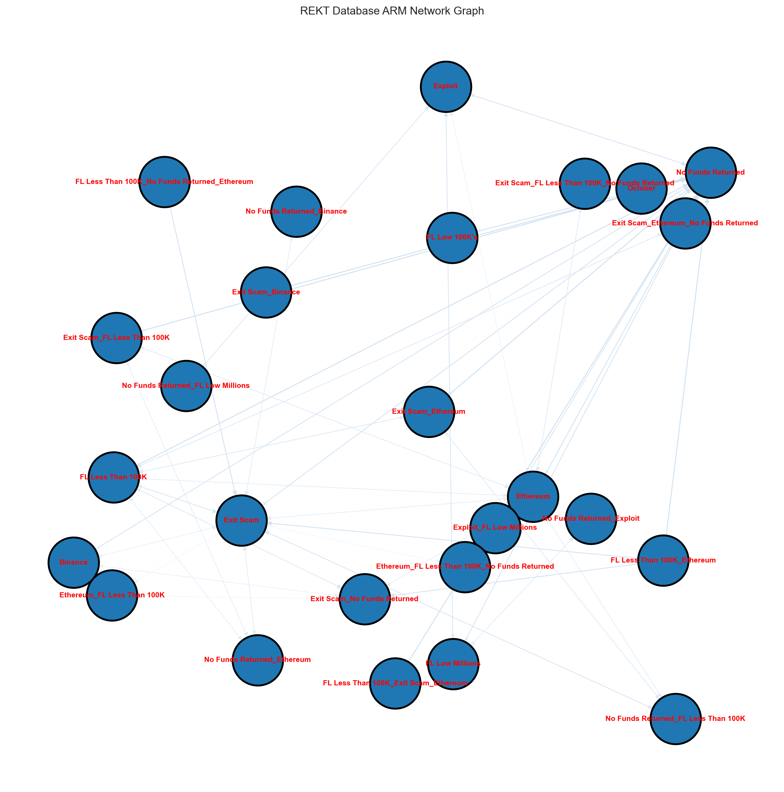

Association Rule Mining with Record Data (REKT Database)
Introduction
For ARM analysis, we shall use the cleaned REKT Database that we used for classification analysis. Like clustering analysis, ARM does not require a response variable beacuse it is an unsupervised machine learning method. However, unlike clustering, we do not drop the target variable (Y) of scam_type_grouped for ARM and treat it as a feature. Moreover, we will use the categorical variables month_of_attack and day_of_week_of_attack as two additional features. For simplicity, the day_of_year_of_attack variable shall be dropped because month_of_attack and day_of_week_of_attack convey enough information for datetime features. Additionally, because ARM requires all variables to be categorical, we shall convert the log funds (lost and returned) variables into their original dollar values and discretize them for accurate analysis.
The feature data (X) that we will eventually be left with will contain 6 record features, including two features of discretized funds (lost and returned), two datetime extracted features of month_of_attack and day_of_week_of_attack, and two categorical variables scamNetworks, which denotes the type of project or token associated with the attack, and scam_type_grouped, which denotes the type of attack (Exit Scam or Exploit). By the end of the analysis, we will showcase how these six variables relate with each other in terms of the rules generated by the Apriori Algorithm. We shall also make use of the support, confidence, and lift metrics to analyse the results of the network.
Theory
Association Rule Mining (ARM) and the Apriori Algorithm
ARM is an unsupervised rule-based machine learning method that learns associations among item-sets or attributes. An item-set is a collection of attribute values that appears in one or more training examples. The rules take the form of “if-then” statements, including a precondition and conclusion. Format: If precondition, Then conclusion (If A -> Then B, where A and B is an item-set). We can also obtain the converse of a rule by swapping the precondition and conclusion. ARM’s goal is to find rules (i.e. a model), given a set of transactions (training data), that will predict the occurrence of an item based on the occurrences of other items in the training data. To further understand how these rules are generated we must understand three metrics of a rule:
Support: The popularity of an item set as measured by the proportion of transactions in which an item-set appears. Or, given a rule \(A \Rightarrow B, Support(A, B) = P(A \cap B) = \frac{\text{number of transactions containing A and B}}{\text{total number of transactions}}\), where A and B are separate item sets that occur in at the same time in a transaction. Therefore, the support denotes how often items with A and items in B occur together relative to all other transactions. Support takes on values between 0 and 1, where 1 signifies that the item-set is highly important and 0 signifies irrelevance. For larger datasets, we prune the number of rules we shall consider by limiting ourselves with a sufficient support threshold.
Confidence: If the precondition holds true, how likely is it that the conclusion also holds? Therefore, \(Confidence(A \Rightarrow B) = P(B|A) = \frac{support(A \cap B)}{support(A)} = \frac{\text{number of transactions containing A and B}}{\text{number of transactions containing A}}\). In words, confidence measures how often items in A and items in B occur together, relative to transactions that contain A. Confidence gauges how statistically “strong” a rule is and, like support, it takes on values between 0 and 1, where 1 indicates that B is bought everytime A is and 0 indicates no instance of the respective rule occuring.
Lift: How likely item B is present when item A is present, while controlling for how popular item B is. Therefore, \(Lift(A \Rightarrow B) = \frac{support(A \cap B)}{support(A) * support(B)}\), given that A and B are independent. A lift value of 1 represents no associations between item-sets, so no rule can be drawn involving those item-sets. A lift value greater than 1 represents a positive relation between the items or, simply put, a dependence on one another. Whereas a lift value lesser than 1 represents negative relation between the items or a substitution effect between them.
It is also important to keep in mind that support does not change when we permute items in the item-set!
The Apriori Algorithm helps learn association rules and can be divided into 2 stages: 1. Gradually build up larger and larger item-sets that have sufficient support using a threshold 2. Form rules from item-sets by keeping those that have high enough confidence Therefore, if we have n unique items, we obtain \(2^n\) total number of item-sets and \(3^n - 2^{n+1} + 1\) total possible association rules
Methods
Data Selection
Code
# import the necessary packagesimport pandas as pdimport numpy as npimport matplotlib.pyplot as pltimport seaborn as snssns.set_theme(style="whitegrid", palette='Set2')import warningswarnings.filterwarnings("ignore")from apyori import aprioriimport networkx as nx # read in cleaned REKT Database and drop labels and other variables, leaving only feature data (X)df = pd.read_csv("../../data/Clean Data/REKT_Database_Clean_Classification.csv", index_col=[0])df_arm = df.drop(['day_of_year_of_attack'], axis=1)df_arm.head() # visualize first 5 rows
We will first convert the log funds and log returned variables into their original values using numpy’s exponential function. To convert the funds variables into categorical, we shall discretize them into the following values: “Billions \(\Rightarrow\) funds \(\geq\) 1,000,000,000”, “High Millions \(\Rightarrow\) 1000000000 \(\leq\) funds \(\geq\) 500000000”, “Low Millions \(\Rightarrow\) 500000000 \(\leq\) funds \(\geq\) 1000000”, “High 100K’s \(\Rightarrow\) 1000000 \(\leq\) funds \(\geq\) 500000”, “Low 100K’s \(\Rightarrow\) 500000 \(\leq\) funds \(\geq\) 100000”, “Less Than 100K \(\Rightarrow\) 100000 \(\leq\) funds”. Also, for the funds returned variable, because around 90% of values contain $0 being returned for an attack, we will add a “No Funds Returned” category.
We shall also add names of months and days for the respective date time features, instead of keeping the numeric categories, for easier interpretation of the network. Lastly, we shall drop the log funds and original funds variables to keep only the discretized string variables for funds lost and funds returned.
Code
df_arm['funds_lost_USD'] = np.exp(df_arm['log_funds_lost']).round()df_arm['funds_returned_USD'] = np.exp(df_arm['log_funds_returned']).round() -1# subtract 1 because we had zeros in funds_returned that avoided negative inf values when converting to logdef assign_funds_lost_val(row):if row >=1000000000: result ='FL Billions'elif row >=500000000and row <1000000000: result ='FL High Millions'elif row >=1000000and row <500000000: result ='FL Low Millions'elif row >=500000and row <1000000: result ="FL High 100K's"elif row >=100000and row <500000: result ="FL Low 100K's"else: result ="FL Less Than 100K"return resultdf_arm['funds_lost_USD_discretized'] = df_arm['funds_lost_USD'].apply(assign_funds_lost_val)def assign_funds_ret_val(row):if row >=1000000000: result ='FR Billions'elif row >=500000000and row <1000000000: result ='FR High Millions'elif row >=1000000and row <500000000: result ='FR Low Millions'elif row >=500000and row <1000000: result ="FR High 100K's"elif row >=100000and row <500000: result ="FR Low 100K's"elif row >0and row <100000: result ="FR Less Than 100K (>0)"else: result ="No Funds Returned"return resultdf_arm['funds_returned_USD_discretized'] = df_arm['funds_returned_USD'].apply(assign_funds_ret_val)def assign_month(row):if row ==1: result ='January'elif row ==2: result ='February'elif row ==3: result ='March'elif row ==4: result ="April"elif row ==5: result ="May"elif row ==6: result ="June"elif row ==7: result ="July"elif row ==8: result ="August"elif row ==9: result ="September"elif row ==10: result ="October"elif row ==11: result ="October"else: result ="December"return resultdf_arm['month_of_attack'] = df_arm['month_of_attack'].apply(assign_month)def assign_dow(row):if row ==0: result ='Monday'elif row ==1: result ='Tuesday'elif row ==2: result ='Wednesday'elif row ==3: result ="Thursday"elif row ==4: result ="Friday"elif row ==5: result ="Saturday"else: result ="Sunday"return resultdf_arm['day_of_week_of_attack'] = df_arm['day_of_week_of_attack'].apply(assign_dow)df_arm = df_arm.drop(['log_funds_lost', 'log_funds_returned', 'funds_lost_USD', 'funds_returned_USD'], axis=1)df_arm.head()
No Funds Returned 751
FR Low Millions 42
FR Low 100K's 10
FR Less Than 100K (>0) 6
FR High 100K's 5
FR High Millions 2
Name: funds_returned_USD_discretized, dtype: int64
The above table shows us the frequency of each discretized numeric value for funds returned (USD). Almost 90% of attacks did not result in funds being returned to the respective cyryptocurrency project or chain. Keeping this factor in mind, we shall create 2 Apriori Algorithm models, one with with no funds returned and one without.
Code
# CONVERT THE DATA FRAME TO A LIST OF LISTStransactions = []for i inrange(0, df_arm.shape[0]): transaction=[]for j inrange(0, df_arm.shape[1]):if(str(df_arm.iloc[i,j]) !="nan"): transaction.append(df_arm.iloc[i,j]) transactions.append(transaction)#print(transactions)
Utility function: Re-format output
Code
from apyori import aprioriimport pandas as pd def reformat_results(results):#CLEAN-UP RESULTS keep=[]for i inrange(0,len(results)):# print("=====================================")# print(results[i])# print(len(list(results[i])))for j inrange(0,len(list(results[i]))):# print(results)if(j>1):for k inrange(0,len(list(results[i][j]))):if(len(results[i][j][k][0])!=0):#print(len(results[i][j][k][0]),results[i][j][k][0]) rhs=list(results[i][j][k][0]) lhs=list(results[i][j][k][1]) conf=float(results[i][j][k][2]) lift=float(results[i][j][k][3]) keep.append([rhs,lhs,supp,conf,supp*conf,lift])# keep.append()if(j==1): supp=results[i][j]return pd.DataFrame(keep, columns =["rhs","lhs","supp","conf","supp x conf","lift"])
Utility function: Convert to NetworkX object
Code
def convert_to_network(df):print(df)#BUILD GRAPH G = nx.DiGraph() # DIRECTEDfor row in df.iterrows():# for column in df.columns: lhs="_".join(row[1][0]) rhs="_".join(row[1][1]) conf=row[1][3];#print(conf)if(lhs notin G.nodes): G.add_node(lhs)if(rhs notin G.nodes): G.add_node(rhs) edge=(lhs,rhs)if edge notin G.edges: G.add_edge(lhs, rhs, weight=conf)# print(G.nodes)# print(G.edges)return G
Utility function: Plot NetworkX object
Code
def plot_network(G):#SPECIFIY X-Y POSITIONS FOR PLOTTING pos=nx.random_layout(G)#GENERATE PLOT fig, ax = plt.subplots() fig.set_size_inches(15, 15)#assign colors based on attributes weights_e = [G[u][v]['weight'] for u,v in G.edges()]#SAMPLE CMAP FOR COLORS cmap=plt.cm.get_cmap('Blues') colors_e = [cmap(G[u][v]['weight']/5.0) for u,v in G.edges()]#PLOT nx.draw( G, edgecolors="black", edge_color=colors_e, node_size=3000, linewidths=2, font_size=8, font_color="red", font_weight="bold", width=weights_e, with_labels=True, pos=pos, ax=ax ) nx.spring_layout(G, 1/5) ax.set(title='REKT Database ARM Network Graph')# ax.set_aspect('equal', 'box')# plt.colorbar(cmap)# fig.savefig("test.png") plt.show()
Transactions: 0 1 2 3 4 \
0 Ethereum August Sunday Exploit FL Low Millions
1 Avax May Tuesday Exit Scam FL Less Than 100K
2 CEX April Saturday Exploit FL Low Millions
3 Binance July Wednesday Exit Scam FL High 100K's
4 Fantom May Saturday Exploit FL Less Than 100K
.. ... ... ... ... ...
811 Binance May Thursday Exploit FL High 100K's
812 CEX March Sunday Exploit FL Low 100K's
813 Polygon July Sunday Exploit FL Low 100K's
814 Ethereum August Tuesday Exploit FL Low Millions
815 Ethereum October Friday Exit Scam FL Less Than 100K
5
0 No Funds Returned
1 No Funds Returned
2 No Funds Returned
3 No Funds Returned
4 No Funds Returned
.. ...
811 No Funds Returned
812 No Funds Returned
813 FR Low 100K's
814 No Funds Returned
815 No Funds Returned
[816 rows x 6 columns]
Results
rhs lhs \
0 [Binance] [Exit Scam]
1 [Exit Scam] [Binance]
2 [Binance] [No Funds Returned]
3 [No Funds Returned] [Binance]
4 [Ethereum] [Exit Scam]
.. ... ...
70 [No Funds Returned, FL Less Than 100K] [Exit Scam, Ethereum]
71 [FL Less Than 100K, Exit Scam, Ethereum] [No Funds Returned]
72 [Exit Scam, Ethereum, No Funds Returned] [FL Less Than 100K]
73 [FL Less Than 100K, No Funds Returned, Ethereum] [Exit Scam]
74 [Exit Scam, FL Less Than 100K, No Funds Returned] [Ethereum]
supp conf supp x conf lift
0 0.169118 0.577406 0.097650 1.236649
1 0.169118 0.362205 0.061255 1.236649
2 0.285539 0.974895 0.278371 1.059274
3 0.285539 0.310253 0.088589 1.059274
4 0.236520 0.559420 0.132314 1.198128
.. ... ... ... ...
70 0.170343 0.534615 0.091068 2.260343
71 0.170343 1.000000 0.170343 1.086551
72 0.170343 0.720207 0.122682 2.226095
73 0.170343 0.920530 0.156806 1.971528
74 0.170343 0.661905 0.112751 1.565549
[75 rows x 6 columns]
rhs lhs \
0 [Binance] [Exit Scam]
1 [Exit Scam] [Binance]
2 [Binance] [No Funds Returned]
3 [No Funds Returned] [Binance]
4 [Ethereum] [Exit Scam]
.. ... ...
70 [No Funds Returned, FL Less Than 100K] [Exit Scam, Ethereum]
71 [FL Less Than 100K, Exit Scam, Ethereum] [No Funds Returned]
72 [Exit Scam, Ethereum, No Funds Returned] [FL Less Than 100K]
73 [FL Less Than 100K, No Funds Returned, Ethereum] [Exit Scam]
74 [Exit Scam, FL Less Than 100K, No Funds Returned] [Ethereum]
supp conf supp x conf lift
0 0.169118 0.577406 0.097650 1.236649
1 0.169118 0.362205 0.061255 1.236649
2 0.285539 0.974895 0.278371 1.059274
3 0.285539 0.310253 0.088589 1.059274
4 0.236520 0.559420 0.132314 1.198128
.. ... ... ... ...
70 0.170343 0.534615 0.091068 2.260343
71 0.170343 1.000000 0.170343 1.086551
72 0.170343 0.720207 0.122682 2.226095
73 0.170343 0.920530 0.156806 1.971528
74 0.170343 0.661905 0.112751 1.565549
[75 rows x 6 columns]

According to the above NetworkX graph and table of metrics, we see that a lot of rules, with lift > 1, were formed for no funds returned (USD). I also chose a minimum confidence threshold of 0.2 to include date time features in the graph. A confidence threshold of higher than that eliminates the date time features, which means that rules including date time item-sets get pruned due to their low associations with funds lost and returned. The graph provides insights about the Ethereum and Binance cryptocurrency platforms losing funds in the low 100 thousand’s ($100,000 to $500,000) and low millions ($1,000,000 to $500,000,000) that led to no funds being returned. Because no funds returned is a majority category of the data (almost 90%), we obtained these rules that were dominated with no funds returned.
In terms of the datetime features, weekends are more likely to be associated with attacks than weekdays are. Let’s see what other insights can be generated if we filter out values where no funds were returned…
Apriori Algorithm After Filtering No Funds Returned Values
Code
df_arm_flitered = df_arm.query("funds_returned_USD_discretized != 'No Funds Returned'")print(df_arm_flitered.shape)# CONVERT THE DATA FRAME TO A LIST OF LISTStransactions = []for i inrange(0, df_arm_flitered.shape[0]): transaction=[]for j inrange(0, df_arm_flitered.shape[1]):if(str(df_arm_flitered.iloc[i,j]) !="nan"): transaction.append(df_arm_flitered.iloc[i,j]) transactions.append(transaction)#print(transactions)print("Transactions:",pd.DataFrame(transactions))results =list(apriori(transactions, min_support=0.15, min_confidence=0.1, min_length=2, max_length=5)) #RUN APRIORI ALGORITHMpd_results=reformat_results(results)print("Results\n",pd_results)G=convert_to_network(pd_results)plot_network(G)
From the above NetworkX graph obtained after filtering no funds returned values, a clear association between the Ethereum chain and funds lost as well as returned in the millions can be seen. Moreover, most of these attacks were Exploits, comprising Access Control, Flash Loan Attacks, and Phishing. If funds were lost between $1,000,000 and $500,000,0000 from the Ethereum chain due to Exploits, funds were returned too in the same magnitude as which they were lost. Moreover, weekends still trump weekdays when an attack took place.
Conclusions
To wrap up, we found that attacks that were Exploits (Access Control, Flash Loan Attacks, and Phishing) were generally linked to the Ethereum chain and lost as well as recovered funds in the low millions (USD). The CEX cryptocurrency platform too was related to exploit attacks and were able to recover funds in the low millions (USD). Exit Scams comprising Honeypot attacks, Rugpull attacks, and Abandoned scams, on the other hand, were attacks that generally resulted in funds lost in the low millions (USD) but not being able to recover any funds. Exploit attacks were common on weekends rather than weekdays resulted in Our dataset was conducive to running the Apriori Algorithm on it; however, a larger dataset would take more time train on and may result in more insignificant rules to filter from.
“Association Rules and the Apriori Algorithm: A Tutorial.” KDnuggets. Accessed December 1, 2022. https://www.kdnuggets.com/2016/04/association-rules-apriori-algorithm-tutorial.html.
Source Code
---format: html: backgroundcolor: "#63666A" fontcolor: white linkcolor: black code-fold: true code-tools: true df-print: paged highlight-style: vim-darkjupyter: python3---# Association Rule Mining with Record Data (REKT Database)## IntroductionFor ARM analysis, we shall use the cleaned REKT Database that we used for classification analysis. Like clustering analysis, ARM does not require a response variable beacuse it is an unsupervised machine learning method. However, unlike clustering, we do not drop the target variable (Y) of scam_type_grouped for ARM and treat it as a feature. Moreover, we will use the categorical variables month_of_attack and day_of_week_of_attack as two additional features. For simplicity, the day_of_year_of_attack variable shall be dropped because month_of_attack and day_of_week_of_attack convey enough information for datetime features. Additionally, because ARM requires all variables to be categorical, we shall convert the log funds (lost and returned) variables into their original dollar values and discretize them for accurate analysis.The feature data (X) that we will eventually be left with will contain 6 record features, including two features of discretized funds (lost and returned), two datetime extracted features of month_of_attack and day_of_week_of_attack, and two categorical variables scamNetworks, which denotes the type of project or token associated with the attack, and scam_type_grouped, which denotes the type of attack (Exit Scam or Exploit). By the end of the analysis, we will showcase how these six variables relate with each other in terms of the rules generated by the Apriori Algorithm. We shall also make use of the support, confidence, and lift metrics to analyse the results of the network.## Theory#### Association Rule Mining (ARM) and the Apriori AlgorithmARM is an unsupervised rule-based machine learning method that learns associations among item-sets or attributes. An item-set is a collection of attribute values that appears in one or more training examples. The rules take the form of "if-then" statements, including a precondition and conclusion. Format:If precondition, Then conclusion (If A -> Then B, where A and B is an item-set). We can also obtain the converse of a rule by swapping the precondition and conclusion. ARM's goal is to find rules (i.e. a model), given a set of transactions (training data), that will predict the occurrence of an item based on the occurrences of other items in the training data. To further understand how these rules are generated we must understand three metrics of a rule:1. Support: The popularity of an item set as measured by the proportion of transactions in which an item-set appears. Or, given a rule $A \Rightarrow B, Support(A, B) = P(A \cap B) = \frac{\text{number of transactions containing A and B}}{\text{total number of transactions}}$, where A and B are separate item sets that occur in at the same time in a transaction. Therefore, the support denotes how often items with A and items in B occur together relative to all other transactions. Support takes on values between 0 and 1, where 1 signifies that the item-set is highly important and 0 signifies irrelevance. For larger datasets, we prune the number of rules we shall consider by limiting ourselves with a sufficient support threshold. 2. Confidence: If the precondition holds true, how likely is it that the conclusion also holds? Therefore, $Confidence(A \Rightarrow B) = P(B|A) = \frac{support(A \cap B)}{support(A)} = \frac{\text{number of transactions containing A and B}}{\text{number of transactions containing A}}$. In words, confidence measures how often items in A and items in B occur together, relative to transactions that contain A. Confidence gauges how statistically “strong” a rule is and, like support, it takes on values between 0 and 1, where 1 indicates that B is bought everytime A is and 0 indicates no instance of the respective rule occuring.3. Lift: How likely item B is present when item A is present, while controlling for how popular item B is. Therefore, $Lift(A \Rightarrow B) = \frac{support(A \cap B)}{support(A) * support(B)}$, given that A and B are independent. A lift value of 1 represents no associations between item-sets, so no rule can be drawn involving those item-sets. A lift value greater than 1 represents a positive relation between the items or, simply put, a dependence on one another. Whereas a lift value lesser than 1 represents negative relation between the items or a substitution effect between them.*It is also important to keep in mind that support does not change when we permute items in the item-set!*The Apriori Algorithm helps learn association rules and can be divided into 2 stages:1. Gradually build up larger and larger item-sets that have sufficient support using a threshold2. Form rules from item-sets by keeping those that have high enough confidenceTherefore, if we have n unique items, we obtain $2^n$ total number of item-sets and $3^n - 2^{n+1} + 1$ total possible association rules## Methods### Data Selection```{python}# import the necessary packagesimport pandas as pdimport numpy as npimport matplotlib.pyplot as pltimport seaborn as snssns.set_theme(style="whitegrid", palette='Set2')import warningswarnings.filterwarnings("ignore")from apyori import aprioriimport networkx as nx # read in cleaned REKT Database and drop labels and other variables, leaving only feature data (X)df = pd.read_csv("../../data/Clean Data/REKT_Database_Clean_Classification.csv", index_col=[0])df_arm = df.drop(['day_of_year_of_attack'], axis=1)df_arm.head() # visualize first 5 rows``````{python}df['day_of_week_of_attack'].value_counts()``````{python}df_arm.shape # get the number of rows and columns``````{python}print(df_arm.info()) # get column information``````{python}df_arm.isnull().sum() # check for missing values```### Feature selection and Pre-processingWe will first convert the log funds and log returned variables into their original values using numpy's exponential function. To convert the funds variables into categorical, we shall discretize them into the following values: "Billions $\Rightarrow$ funds $\geq$ 1,000,000,000", "High Millions $\Rightarrow$ 1000000000 $\leq$ funds $\geq$ 500000000", "Low Millions $\Rightarrow$ 500000000 $\leq$ funds $\geq$ 1000000", "High 100K's $\Rightarrow$ 1000000 $\leq$ funds $\geq$ 500000", "Low 100K's $\Rightarrow$ 500000 $\leq$ funds $\geq$ 100000", "Less Than 100K $\Rightarrow$ 100000 $\leq$ funds". Also, for the funds returned variable, because around 90% of values contain $0 being returned for an attack, we will add a "No Funds Returned" category.We shall also add names of months and days for the respective date time features, instead of keeping the numeric categories, for easier interpretation of the network. Lastly, we shall drop the log funds and original funds variables to keep only the discretized string variables for funds lost and funds returned.```{python}df_arm['funds_lost_USD'] = np.exp(df_arm['log_funds_lost']).round()df_arm['funds_returned_USD'] = np.exp(df_arm['log_funds_returned']).round() -1# subtract 1 because we had zeros in funds_returned that avoided negative inf values when converting to logdef assign_funds_lost_val(row):if row >=1000000000: result ='FL Billions'elif row >=500000000and row <1000000000: result ='FL High Millions'elif row >=1000000and row <500000000: result ='FL Low Millions'elif row >=500000and row <1000000: result ="FL High 100K's"elif row >=100000and row <500000: result ="FL Low 100K's"else: result ="FL Less Than 100K"return resultdf_arm['funds_lost_USD_discretized'] = df_arm['funds_lost_USD'].apply(assign_funds_lost_val)def assign_funds_ret_val(row):if row >=1000000000: result ='FR Billions'elif row >=500000000and row <1000000000: result ='FR High Millions'elif row >=1000000and row <500000000: result ='FR Low Millions'elif row >=500000and row <1000000: result ="FR High 100K's"elif row >=100000and row <500000: result ="FR Low 100K's"elif row >0and row <100000: result ="FR Less Than 100K (>0)"else: result ="No Funds Returned"return resultdf_arm['funds_returned_USD_discretized'] = df_arm['funds_returned_USD'].apply(assign_funds_ret_val)def assign_month(row):if row ==1: result ='January'elif row ==2: result ='February'elif row ==3: result ='March'elif row ==4: result ="April"elif row ==5: result ="May"elif row ==6: result ="June"elif row ==7: result ="July"elif row ==8: result ="August"elif row ==9: result ="September"elif row ==10: result ="October"elif row ==11: result ="October"else: result ="December"return resultdf_arm['month_of_attack'] = df_arm['month_of_attack'].apply(assign_month)def assign_dow(row):if row ==0: result ='Monday'elif row ==1: result ='Tuesday'elif row ==2: result ='Wednesday'elif row ==3: result ="Thursday"elif row ==4: result ="Friday"elif row ==5: result ="Saturday"else: result ="Sunday"return resultdf_arm['day_of_week_of_attack'] = df_arm['day_of_week_of_attack'].apply(assign_dow)df_arm = df_arm.drop(['log_funds_lost', 'log_funds_returned', 'funds_lost_USD', 'funds_returned_USD'], axis=1)df_arm.head()``````{python}df_arm['funds_returned_USD_discretized'].value_counts()```The above table shows us the frequency of each discretized numeric value for funds returned (USD). Almost 90% of attacks did not result in funds being returned to the respective cyryptocurrency project or chain. Keeping this factor in mind, we shall create 2 Apriori Algorithm models, one with with no funds returned and one without.```{python}# CONVERT THE DATA FRAME TO A LIST OF LISTStransactions = []for i inrange(0, df_arm.shape[0]): transaction=[]for j inrange(0, df_arm.shape[1]):if(str(df_arm.iloc[i,j]) !="nan"): transaction.append(df_arm.iloc[i,j]) transactions.append(transaction)#print(transactions)```# Utility function: Re-format output```{python}from apyori import aprioriimport pandas as pd def reformat_results(results):#CLEAN-UP RESULTS keep=[]for i inrange(0,len(results)):# print("=====================================")# print(results[i])# print(len(list(results[i])))for j inrange(0,len(list(results[i]))):# print(results)if(j>1):for k inrange(0,len(list(results[i][j]))):if(len(results[i][j][k][0])!=0):#print(len(results[i][j][k][0]),results[i][j][k][0]) rhs=list(results[i][j][k][0]) lhs=list(results[i][j][k][1]) conf=float(results[i][j][k][2]) lift=float(results[i][j][k][3]) keep.append([rhs,lhs,supp,conf,supp*conf,lift])# keep.append()if(j==1): supp=results[i][j]return pd.DataFrame(keep, columns =["rhs","lhs","supp","conf","supp x conf","lift"])```# Utility function: Convert to NetworkX object ```{python}def convert_to_network(df):print(df)#BUILD GRAPH G = nx.DiGraph() # DIRECTEDfor row in df.iterrows():# for column in df.columns: lhs="_".join(row[1][0]) rhs="_".join(row[1][1]) conf=row[1][3];#print(conf)if(lhs notin G.nodes): G.add_node(lhs)if(rhs notin G.nodes): G.add_node(rhs) edge=(lhs,rhs)if edge notin G.edges: G.add_edge(lhs, rhs, weight=conf)# print(G.nodes)# print(G.edges)return G```# Utility function: Plot NetworkX object```{python}def plot_network(G):#SPECIFIY X-Y POSITIONS FOR PLOTTING pos=nx.random_layout(G)#GENERATE PLOT fig, ax = plt.subplots() fig.set_size_inches(15, 15)#assign colors based on attributes weights_e = [G[u][v]['weight'] for u,v in G.edges()]#SAMPLE CMAP FOR COLORS cmap=plt.cm.get_cmap('Blues') colors_e = [cmap(G[u][v]['weight']/5.0) for u,v in G.edges()]#PLOT nx.draw( G, edgecolors="black", edge_color=colors_e, node_size=3000, linewidths=2, font_size=8, font_color="red", font_weight="bold", width=weights_e, with_labels=True, pos=pos, ax=ax ) nx.spring_layout(G, 1/5) ax.set(title='REKT Database ARM Network Graph')# ax.set_aspect('equal', 'box')# plt.colorbar(cmap)# fig.savefig("test.png") plt.show()```# Perform Apriori Algorithm```{python}print("Transactions:",pd.DataFrame(transactions))results =list(apriori(transactions, min_support=0.15, min_confidence=0.2, min_length=2, max_length=10)) #RUN APRIORI ALGORITHMpd_results=reformat_results(results)print("Results\n",pd_results)G=convert_to_network(pd_results)plot_network(G)```According to the above NetworkX graph and table of metrics, we see that a lot of rules, with lift > 1, were formed for no funds returned (USD). I also chose a minimum confidence threshold of 0.2 to include date time features in the graph. A confidence threshold of higher than that eliminates the date time features, which means that rules including date time item-sets get pruned due to their low associations with funds lost and returned. The graph provides insights about the Ethereum and Binance cryptocurrency platforms losing funds in the low 100 thousand's ($100,000 to $500,000) and low millions ($1,000,000 to $500,000,000) that led to no funds being returned. Because no funds returned is a majority category of the data (almost 90%), we obtained these rules that were dominated with no funds returned. In terms of the datetime features, weekends are more likely to be associated with attacks than weekdays are. Let's see what other insights can be generated if we filter out values where no funds were returned...### Apriori Algorithm After Filtering No Funds Returned Values```{python}df_arm_flitered = df_arm.query("funds_returned_USD_discretized != 'No Funds Returned'")print(df_arm_flitered.shape)# CONVERT THE DATA FRAME TO A LIST OF LISTStransactions = []for i inrange(0, df_arm_flitered.shape[0]): transaction=[]for j inrange(0, df_arm_flitered.shape[1]):if(str(df_arm_flitered.iloc[i,j]) !="nan"): transaction.append(df_arm_flitered.iloc[i,j]) transactions.append(transaction)#print(transactions)print("Transactions:",pd.DataFrame(transactions))results =list(apriori(transactions, min_support=0.15, min_confidence=0.1, min_length=2, max_length=5)) #RUN APRIORI ALGORITHMpd_results=reformat_results(results)print("Results\n",pd_results)G=convert_to_network(pd_results)plot_network(G)```From the above NetworkX graph obtained after filtering no funds returned values, a clear association between the Ethereum chain and funds lost as well as returned in the millions can be seen. Moreover, most of these attacks were Exploits, comprising Access Control, Flash Loan Attacks, and Phishing. If funds were lost between $1,000,000 and $500,000,0000 from the Ethereum chain due to Exploits, funds were returned too in the same magnitude as which they were lost. Moreover, weekends still trump weekdays when an attack took place.# ConclusionsTo wrap up, we found that attacks that were Exploits (Access Control, Flash Loan Attacks, and Phishing) were generally linked to the Ethereum chain and lost as well as recovered funds in the low millions (USD). The CEX cryptocurrency platform too was related to exploit attacks and were able to recover funds in the low millions (USD). Exit Scams comprising Honeypot attacks, Rugpull attacks, and Abandoned scams, on the other hand, were attacks that generally resulted in funds lost in the low millions (USD) but not being able to recover any funds. Exploit attacks were common on weekends rather than weekdays resulted in Our dataset was conducive to running the Apriori Algorithm on it; however, a larger dataset would take more time train on and may result in more insignificant rules to filter from. # References“Association Rule Learning.” Wikipedia. Wikimedia Foundation. Accessed December 1, 2022. https://en.wikipedia.org/wiki/Association_rule_learning. “Association Rules and the Apriori Algorithm: A Tutorial.” KDnuggets. Accessed December 1, 2022. https://www.kdnuggets.com/2016/04/association-rules-apriori-algorithm-tutorial.html.